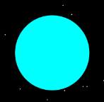

Uranus
Uranus is the seventh planet from the Sun, and has the third-largest diameter in our solar system. It was the first planet found with the aid of a telescope, Uranus was discovered in 1781 by astronomer William Herschel, although he originally thought it was either a comet or a star. It was two years later when the object was universally accepted as a new planet, in part because of observations by astronomer Johann Elert Bode. Herschel tried unsuccessfully to name his discovery Georgium Sidus after King George III. Instead, the scientific community accepted Bode's suggestion to name it Uranus, the Greek god of the sky, as suggested by Bode.
Source NASA
